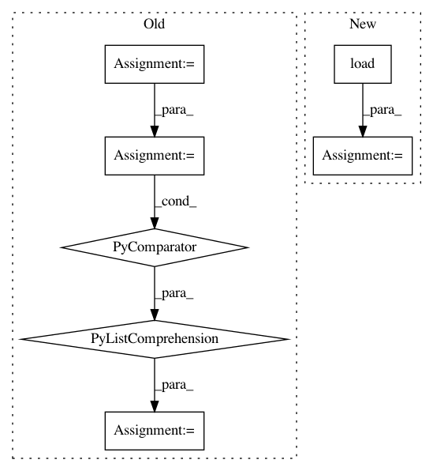

59fed53414575da357eb9aa850a00cfdd896cddd,soynlp/predicator/_predicator.py,PredicatorExtractor,_load_default_stems,#PredicatorExtractor#Any#,60
Before Change
def _load_default_stems(self, min_frequency=100):
dirs = "%s/lemmatizer/dictionary/default/Stem" % installpath
paths = ["%s/Adjective.txt", "%s/Verb.txt"]
paths = [p % dirs for p in paths]
stems = set()
for path in paths:
with open(path, encoding="utf-8") as f:
for line in f:
word, frequency = line.split()
if int(frequency) < min_frequency:
continue
stems.add(word)
return stems
def _load_default_eomis(self, min_frequency=20):
path = "%s/lemmatizer/dictionary/default/Eomi/Eomi.txt" % installpath
After Change
return stems
dirs = "%s/lemmatizer/dictionary/default/Stem" % installpath
adjectives = load("%s/Adjective.txt" % dirs)
verbs = load("%s/Verb.txt" % dirs)
return adjectives, verbs
def _load_default_eomis(self, min_frequency=20):
In pattern: SUPERPATTERN
Frequency: 3
Non-data size: 7
Instances
Project Name: lovit/soynlp
Commit Name: 59fed53414575da357eb9aa850a00cfdd896cddd
Time: 2018-11-05
Author: soy.lovit@gmail.com
File Name: soynlp/predicator/_predicator.py
Class Name: PredicatorExtractor
Method Name: _load_default_stems
Project Name: deepfakes/faceswap
Commit Name: 2bcb7d572ac8fdacceb56d5cbd5b05fad8c71e5e
Time: 2021-03-23
Author: 36920800+torzdf@users.noreply.github.com
File Name: tools/sort/sort.py
Class Name: Sort
Method Name: sort_blur
Project Name: deepfakes/faceswap
Commit Name: 9ebc0abc8e85a2fa722aaaf75f8c8793e95ea12f
Time: 2019-12-15
Author: 36920800+torzdf@users.noreply.github.com
File Name: tools/sort.py
Class Name: Sort
Method Name: sort_face